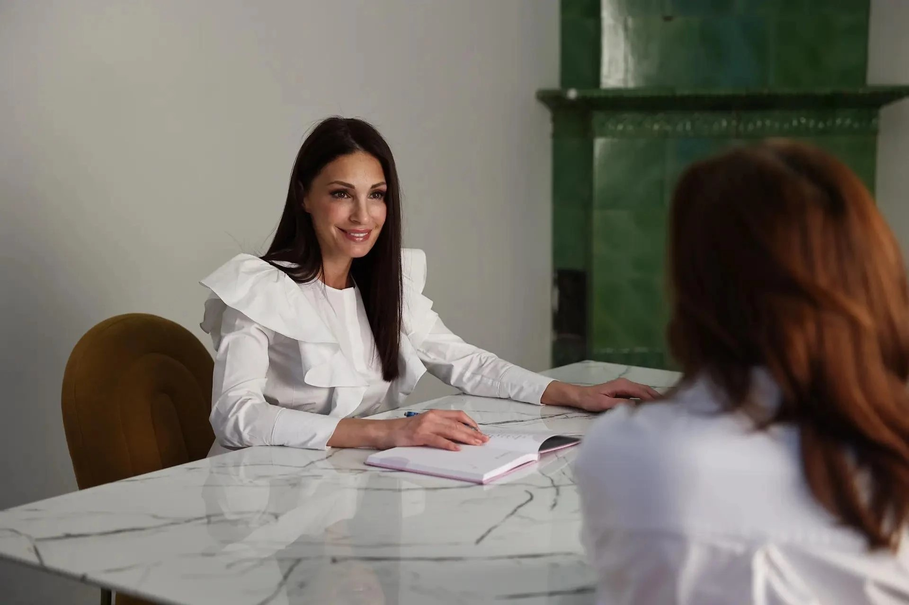

Время услышать
Обсудить то, что беспокоит, и задать все важные вопросы.
Не просто приём. Внимательный разговор,
понятный план и врач, который вас знает.
Меньше спешки.
Больше внимания к вам.

Ваш ритм жизни, привычки и вопросы имеют значение. С этого начинается персональная медицина.
Мы предлагаем формат, в котором есть время разобраться в вашей истории, обсудить варианты и вместе определить следующий шаг.
Обсудить то, что беспокоит, и задать все важные вопросы.
Понять рекомендации и уйти с последовательным планом.
От первого вопроса о самочувствии
до последовательного сопровождения.
Представлен проект направлений. Точный перечень услуг и условия определяются практикой.

«Хорошая медицина начинается с умения слушать».
Здесь будет рассказ о вашем враче: профессиональный путь, подход к работе и то, что важно в общении с пациентами.
Расскажите о своём запросе и узнайте больше о формате работы.
На консультации обсудим историю здоровья и ваши приоритеты.
Согласуем следующие шаги и подходящий формат наблюдения.
О главном — простыми словами.
Это формат взаимодействия с врачом, который уделяет внимание вашей истории здоровья и помогает последовательно решать возникающие вопросы. Объём сопровождения согласовывается индивидуально.
В проекте предусмотрена возможность начать со знакомства и обсудить разовую консультацию. Доступные форматы и стоимость нужно уточнить у врача перед записью.
Составьте список вопросов, подготовьте имеющиеся медицинские документы и список принимаемых препаратов. Не проходите дополнительные обследования специально без согласования с врачом.
Возможность дистанционного общения зависит от вашего запроса и доступных форматов работы практики. Уточните условия при знакомстве; в некоторых случаях потребуется очный приём.
Сайт пока представлен как дизайн-проект. После добавления реальных контактов, перечня услуг и цен эта информация появится в разделе записи.
Обсудим, как персональный подход может помочь вам.